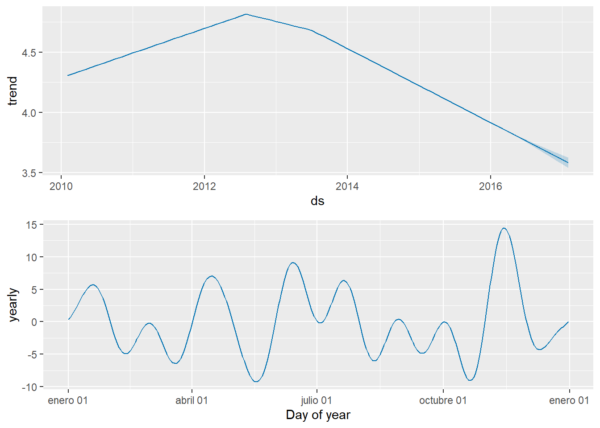
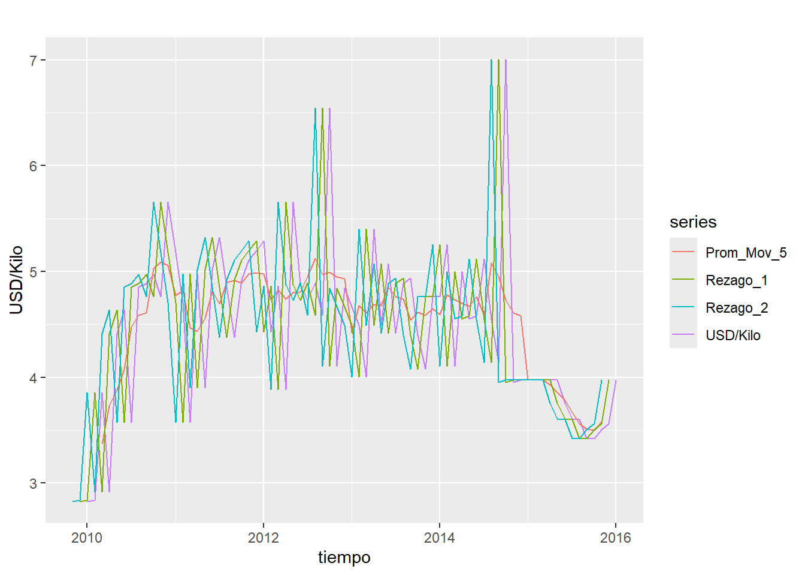
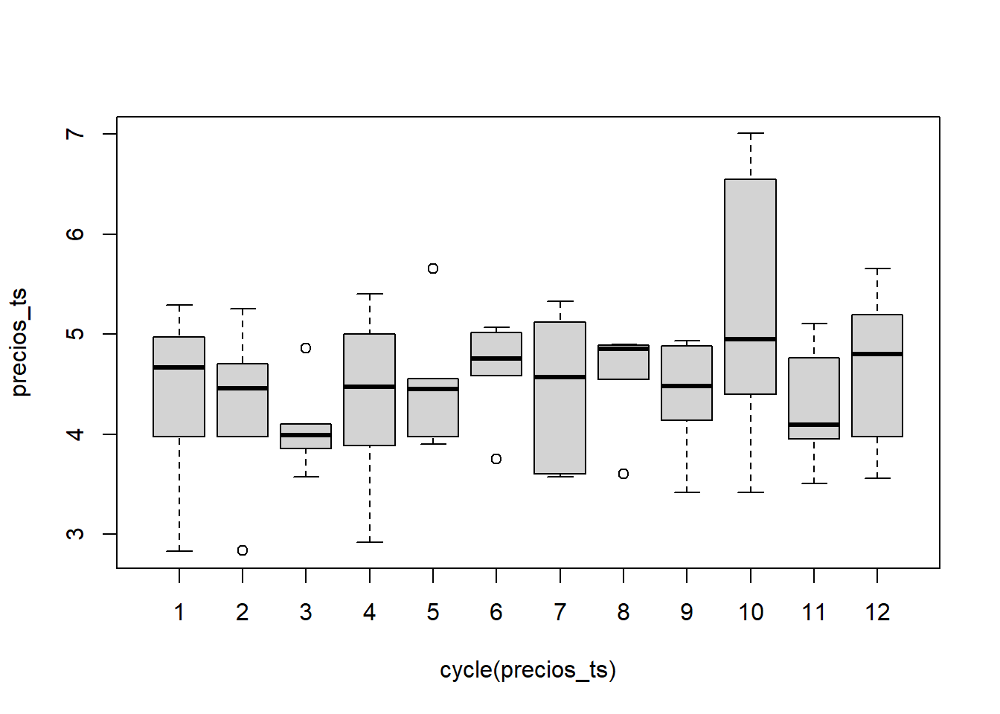
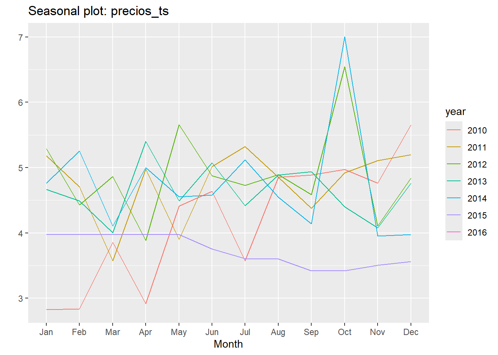

Capítulo 4 Unidad 4
Actividad 4
Importar paquetes:
## Warning: package 'vars' was built under R version 4.2.3## Loading required package: MASS## Loading required package: strucchange## Warning: package 'strucchange' was built under R version 4.2.3## Loading required package: zoo## Warning: package 'zoo' was built under R version 4.2.3##
## Attaching package: 'zoo'## The following objects are masked from 'package:base':
##
## as.Date, as.Date.numeric## Loading required package: sandwich## Warning: package 'sandwich' was built under R version 4.2.3## Loading required package: urca## Warning: package 'urca' was built under R version 4.2.3## Loading required package: lmtest## Warning: package 'lmtest' was built under R version 4.2.3## Warning: package 'TSA' was built under R version 4.2.3##
## Attaching package: 'TSA'## The following objects are masked from 'package:stats':
##
## acf, arima## The following object is masked from 'package:utils':
##
## tarCargar los datos
## Warning: package 'openxlsx' was built under R version 4.2.3# Leer el archivo Excel que ya tienes cargado
datos <- read.xlsx("importacionestriadadef.xlsx")
summary(datos)## Fecha Año Mes Año-mes
## Length:73 Min. :2010 Length:73 Length:73
## Class :character 1st Qu.:2011 Class :character Class :character
## Mode :character Median :2013 Mode :character Mode :character
## Mean :2013
## 3rd Qu.:2014
## Max. :2016
## FECHA_PRESENTACION VALOR_FOB_USD PESTICIDA
## Min. :40210 Min. :2.828 Length:73
## 1st Qu.:40756 1st Qu.:3.977 Class :character
## Median :41306 Median :4.554 Mode :character
## Mean :41304 Mean :4.484
## 3rd Qu.:41852 3rd Qu.:4.922
## Max. :42401 Max. :7.006De total de los datos se seleccionan los campos “Fecha_Presentación” y “Valor_FOB_USD”, este ultimo corresponde al precio por kilo del insecticida.
Se reestablece el formato fecha para trabajar con los datos
Al importar los datos de excel se requiere organizarlos en orden ascendente de acuerdo a la fecha.
## Warning: package 'dplyr' was built under R version 4.2.3##
## Attaching package: 'dplyr'## The following object is masked from 'package:MASS':
##
## select## The following objects are masked from 'package:stats':
##
## filter, lag## The following objects are masked from 'package:base':
##
## intersect, setdiff, setequal, union## Warning: package 'forecast' was built under R version 4.2.3## Registered S3 method overwritten by 'quantmod':
## method from
## as.zoo.data.frame zoo## Registered S3 methods overwritten by 'forecast':
## method from
## fitted.Arima TSA
## plot.Arima TSALos datos que son parte del analisis de serie de tiempos (Cosmo_oil) se transforma en serie de tiempo, iniciando desde el años 2010 y estos estas distribuidos de manera mensual.
Para tener los datos con solo la serie de tiempo y el valor en dolares del kilo de insecticida, se elimina el campo fecha que viene del archivo original.
## Jan Feb Mar Apr May Jun Jul Aug
## 2010 2.828185 2.834620 3.854530 2.916667 4.409457 4.636978 3.571429 4.855076
## 2011 5.179527 4.704291 3.571429 4.974490 3.899573 5.014854 5.325329 4.851072
## 2012 5.288699 4.429228 4.861111 3.885281 5.654762 4.874827 4.727683 4.894822
## 2013 4.664036 4.489247 4.005792 5.400073 4.488467 5.071175 4.414930 4.889079
## 2014 4.761905 5.257170 4.104882 5.001191 4.554254 4.581352 5.118161 4.549266
## 2015 3.976744 3.976744 3.976744 3.975938 3.976744 3.753920 3.605116 3.599848
## 2016 3.976744
## Sep Oct Nov Dec
## 2010 4.885341 4.969938 4.761905 5.654762
## 2011 4.376815 4.921825 5.105262 5.196981
## 2012 4.586640 6.547619 4.105804 4.838826
## 2013 4.935887 4.397211 4.075954 4.761905
## 2014 4.140230 7.006366 3.953889 3.976744
## 2015 3.419432 3.419467 3.506439 3.558834
## 2016#install.packages("tidyverse")
#install.packages("forecast")
#install.packages("purrr")
library(purrr)## Warning: package 'purrr' was built under R version 4.2.3## Warning: package 'tidyverse' was built under R version 4.2.3## Warning: package 'ggplot2' was built under R version 4.2.3## Warning: package 'tibble' was built under R version 4.2.3## Warning: package 'lubridate' was built under R version 4.2.3## ── Attaching core tidyverse packages ──────────────────────── tidyverse 2.0.0 ──
## ✔ forcats 1.0.0 ✔ stringr 1.5.0
## ✔ ggplot2 3.4.3 ✔ tibble 3.2.1
## ✔ lubridate 1.9.3 ✔ tidyr 1.3.0
## ✔ readr 2.1.4
## ── Conflicts ────────────────────────────────────────── tidyverse_conflicts() ──
## ✖ stringr::boundary() masks strucchange::boundary()
## ✖ dplyr::filter() masks stats::filter()
## ✖ dplyr::lag() masks stats::lag()
## ✖ dplyr::select() masks MASS::select()
## ✖ readr::spec() masks TSA::spec()
## ℹ Use the conflicted package (<http://conflicted.r-lib.org/>) to force all conflicts to become errorsLa secuencia de promedio movil se convierte en serie de tiempo usando la instrucciòn “ts”
## Jan Feb Mar Apr May Jun Jul Aug
## 2010 2.828185 2.834620 3.854530 2.916667 4.409457 4.636978 3.571429 4.855076
## 2011 5.179527 4.704291 3.571429 4.974490 3.899573 5.014854 5.325329 4.851072
## 2012 5.288699 4.429228 4.861111 3.885281 5.654762 4.874827 4.727683 4.894822
## 2013 4.664036 4.489247 4.005792 5.400073 4.488467 5.071175 4.414930 4.889079
## 2014 4.761905 5.257170 4.104882 5.001191 4.554254 4.581352 5.118161 4.549266
## 2015 3.976744 3.976744 3.976744 3.975938 3.976744 3.753920 3.605116 3.599848
## 2016 3.976744
## Sep Oct Nov Dec
## 2010 4.885341 4.969938 4.761905 5.654762
## 2011 4.376815 4.921825 5.105262 5.196981
## 2012 4.586640 6.547619 4.105804 4.838826
## 2013 4.935887 4.397211 4.075954 4.761905
## 2014 4.140230 7.006366 3.953889 3.976744
## 2015 3.419432 3.419467 3.506439 3.558834
## 2016Descomposiòn
Se realiza grafica de descomposicion de:
- Tendencia.
- Estacionalidad
- Residuo
## Warning: package 'ggfortify' was built under R version 4.2.3## Registered S3 methods overwritten by 'ggfortify':
## method from
## autoplot.Arima forecast
## autoplot.acf forecast
## autoplot.ar forecast
## autoplot.bats forecast
## autoplot.decomposed.ts forecast
## autoplot.ets forecast
## autoplot.forecast forecast
## autoplot.stl forecast
## autoplot.ts forecast
## fitted.ar forecast
## fortify.ts forecast
## residuals.ar forecastGraficamos la tendencia
## Time-Series [1:73] from 2010 to 2016: 2.83 2.83 3.85 2.92 4.41 ...
## Min. 1st Qu. Median Mean 3rd Qu. Max.
## 2.828 3.977 4.554 4.484 4.922 7.006## [1] "ts"Observamos características
## [1] "ts"## [1] 2010 1## [1] 2016 1## [1] 12## Min. 1st Qu. Median Mean 3rd Qu. Max.
## 2.828 3.977 4.554 4.484 4.922 7.006Observar tendencia y ciclos

## Jan Feb Mar Apr May Jun Jul Aug Sep Oct Nov Dec
## 2010 1 2 3 4 5 6 7 8 9 10 11 12
## 2011 1 2 3 4 5 6 7 8 9 10 11 12
## 2012 1 2 3 4 5 6 7 8 9 10 11 12
## 2013 1 2 3 4 5 6 7 8 9 10 11 12
## 2014 1 2 3 4 5 6 7 8 9 10 11 12
## 2015 1 2 3 4 5 6 7 8 9 10 11 12
## 2016 1Observamos información de los meses en los datos

Se observan valores de media similares en los meses, generando unas pequeñas diferencias entre los meses de marzo, abril y mayo en donde la variación es más alta y datos muy similares desde el mes de agosto hasta diciembre
Se agrega información logarítmica para observar mejor los datos
